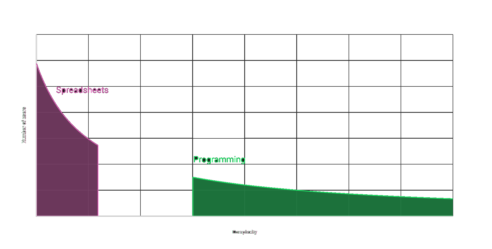

Rethinking
Data Exploration Tools
Tomas Petricek, University of Kent
tomas@tomasp.net | @tomaspetricek
Introduction
Programming languages & data science

What is this
talk about?
Making facts great again!
Making simple data exploration accessible to non-experts
Programming languages
Will deep net make
my work obsolete?
Machine learning
Solving hard problems!
Programming languages
Change how we think!
TheGamma
Simplifying programmatic data exploration
Demo
Exploring carbon emissions
TheGamma
Simple data exploration
Language that understands data
All programming using just 'dot'
Powered by fancy type theory
Can non-experts use this?
Data tooling gap
Data tooling gap

Demo
Exploring Olympic medals
Fancy types for the masses
Row types to track names and types of fields
\[\definecolor{cc}{RGB}{255,255,102} \frac {\Gamma \vdash e : {\color{cc}[f_1:\tau_1, \ldots, f_n:\tau_n]}} {\Gamma \vdash e.\text{drop}~f_i : {\color{cc} [f_1:\tau_1, \ldots, f_{i-1}:\tau_{i-1}, f_{i+1}:\tau_{i+1}, \ldots, f_n:\tau_n]}}\]
Embed row types in provided nominal types
\[\frac {\Gamma \vdash e : {\color{mc} C_1}} {\Gamma \vdash e.\text{drop}~f_i : {\color{mc} C_2}} \quad{\small \text{where}}\]
\[\begin{array}{l} {fields({\color{mc} C_1}) = {\color{mc} \{f_1:\tau_1, \ldots, f_n:\tau_n\}}}\\[-0.25em] {fields({\color{mc} C_2}) = {\color{mc} \{f_1:\tau_1, \ldots, f_{i-1}:\tau_{i-1}, f_{i+1}:\tau_{i+1}, \ldots, f_n:\tau_n\}}} \end{array}\]
Histogram
Programming beyond code
Histogram
System design principles
Programs as lists of interactions
Program by choosing from a list
Forget concrete syntax
Focus on data science
DEMO
Analysing aviation accidents with Histogram
Interactions

Standard coding
Access member
Invoke operation
Define a value
Programming process
Evaluate component
Refactor as function
Implications
Why is Histogram interesting
Type checking lists of interactions
Evaluation can affect types
Bind interactions to user interface
Multiple views for the same program
Demo
Spreadsheets and direct manipulation
AI assistants
Semi-automatic data wrangling
Data Wrangling
Getting data into the right format
Takes 80% of data analyst's time
Tedious manual process
Obtaining and merging data
Fixing and resolving ambiguities

Wrattler project
Research extension for JupyterLab
Mix languages, build interactive tools, analyse code provenance
DEMO
Wrattler and outlier detection
DEMO
Datadiff AI assistant
Summary
Programming language perspective
Iterative prompting
Interaction principle behind all my demos
Programming by choosing from a list
Works with text or user interface
Works for data querying
Works for data wrangling tools
Rethinking data exploration
Programming language design
Design new ways of thinking about problems
Theoretical approach
Constraints are good for innovation
Iterative prompting
Can you do anything this way?
Tomas Petricek, University of Kent
tomas@tomasp.net | @tomaspetricek